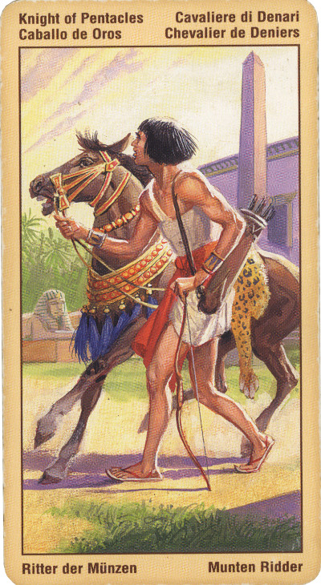

Принц Пентаклей (Рыцарь)
Он же Всадник, Кавалер или Воин Пентаклей.
Стремление к незыблемости, надежности и порядку, а также часто присущее ему умение что-то делать руками, что позволяет таким людям быть великолепными ремесленниками.
Медленный, но верный прогресс. Данная карта предполагает разрешение вопросов и переговоры, связанные с деньгами. Вероятно получение наследства, приобретение недвижимости и т.п. Этот Рыцарь обладает огромной энергией и прекрасным здоровьем.
Рыцарь Денариев символизирует нечто солидное, прочное, постоянное, ту почву или фундамент, на которых мы можем строить свое будущее.
Зрелый человек, сознающий ответственность за все то, что он делает. Этот человек легко идет на контакты. В работе он методичен, вплоть до педантизма. Рыцарь пентаклей терпелив, настойчив, способен доводить любое начатое дело до конца. Это человек организованный, не допускающий в себе никакой расхлябанности.
Рыцарь Пентаклей - человек осторожный и предусмотрительный, он берется за то или иное дело, лишь предварительно все взвесив и рассчитав. В противном случае этот человек предпочтет отказаться даже от очень выгодного предложения.
При гадании на ситуацию Рыцарь Пентаклей предсказывает благополучное для вас решение проблемы. Однако при гадании на ситуацию, связанную с получением денег, Рыцарь Пентаклей предупреждает, что рассчитывать на решение вопроса уже в ближайшем будущем не приходится. Прежде чем вы добьетесь осуществления своего плана, пройдет немало времени.
В перевернутом – неблагоприятное стечение обстоятельств, невезение. Человек, находящийся в состоянии застоя. Или же человек беззаботный, живущий сегодняшним днем. Человек трудно "раскачивается", он нерешителен. Иногда перевернутый рыцарь пентаклей выступает в роли простого ограниченного обывателя. А то и просто обычный лентяй.